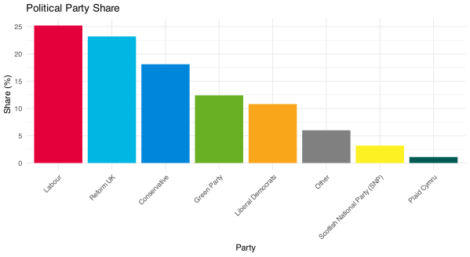
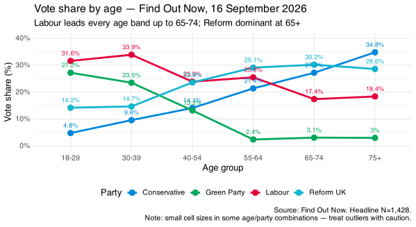
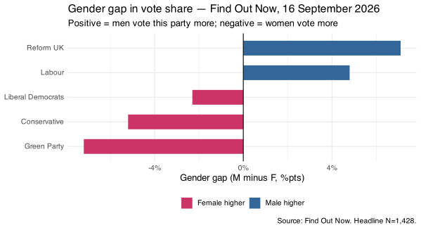
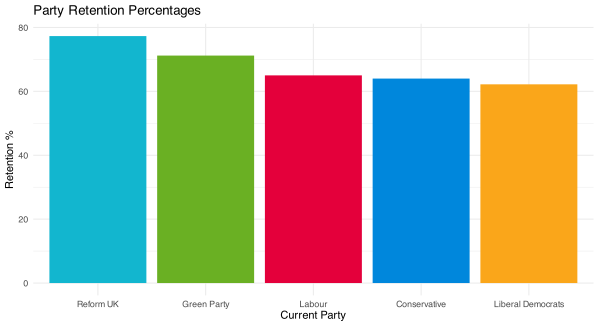
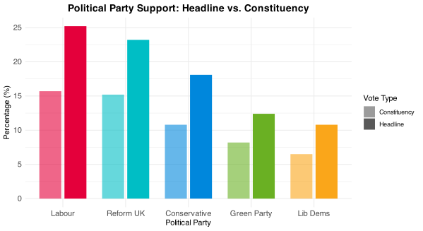
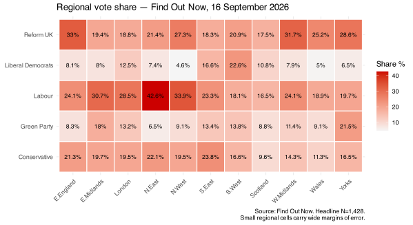

Published September 17, 2026
1. Labour lead by 2 points is real but uncertain at the 2-in-3 confidence level. The gap is within the range where the true position could be a Labour lead, a tie, or a marginal Reform lead. The best estimate is Labour first, but it is not a firm conclusion.
2. Reform retain the highest 2024 voter retention of any party at 77.3%. They lead or are competitive across 18-29, 30-39, 40-54, and 55-64 year olds. But their age advantage is concentrated in the groups with the lowest turnout certainty, and Reform's age advantage is in the groups with the highest. This mismatch matters electorally.
3. Labour's age coalition is the broadest in this poll. An 84.3% retention rate, 30.1% capture of former Labour voters, and 20.0% on a pollster that runs them conservatively points to a party building a durable coalition rather than riding a temporary wave.
4. The Green 30-39 peak (27.2%) is the most geographically and electorally uncertain finding. This cohort has the lowest "definitely vote" rate of any age group (37.4%) and the highest "don't know if I'll vote" rate (25.2%). The Greens' headline in this band overstates their likely actual vote in that cohort if turnout patterns follow historical trends.
5. The constituency-question don't-know rate of 35.6% is critical. More than a third of the raw sample has no formed view about how they would vote in their own seat. This is the pool that a general election campaign would activate and direct, and its direction is currently uncertain.
6. Labour's 9.5-point constituency-question drop is the largest in the poll. Their national lead is real but soft in local terms. Converting a national polling lead into seat wins requires local consolidation that the constituency question suggests is still in progress.

Labour lead on 25.2%, 2.0 points ahead of Reform UK. The Conservatives are third on 18.1%, followed by the Greens (12.4%) and Liberal Democrats (10.8%).
Three observations before any crossbreak is consulted. First, this is a tightly contested top two: at the 2-in-3 confidence level (±2 points), Labour could be anywhere from 23.2% to 27.2% and Reform anywhere from 21.2% to 25.2% — the ranges overlap. The 2-point gap is real in the sense that it is the best available estimate of the true position, but it is not large enough to state with certainty that Labour would lead in an election held on this day.
Second, the combined progressive vote (Labour 25.2% + Greens 12.4% + Lib Dems 10.8% = 48.4%) substantially exceeds the combined right-populist vote (Reform 23.2% + a portion of Other = roughly 27-29%). Under first-past-the-post, this aggregate arithmetic does not translate directly into seats, but it establishes the basic electoral environment within which any party trying to form a government must operate.
Third, the Conservative position at 18.1% — third nationally but the only party with any realistic path to recombining the centre-right vote under a single banner — remains the most structurally significant number in the dataset for anyone trying to model what a general election would actually produce.
Labour lead in four of the six age bands. Among 18-29 year olds they are at 22.6%, ahead of Reform (19.3%) and the Greens (16.3%). Among 30-39 year olds they lead emphatically at 31.6%, ahead of the Greens (27.2%) and Reform (14.2%). Among 40-54 year olds they reach their highest point in the dataset at 33.9%, with the Greens second at 23.5% and Reform at 14.7%. Among 55-64 year olds they lead again at 25.4%, ahead of Reform (23.6%) and Conservatives (14.1%). It is only from 65-74 onwards that Reform overtake Labour — 29.1% to 17.4% at 65-74, and 30.2% to 25.5% at 75+.

This age profile — Labour broadly dominant across working age with Reform dominant only among the oldest voters — has significant electoral implications under first-past-the-post. Older voters have historically higher turnout rates. Among 75+ year olds in this poll, 62.1% say they would "definitely" vote — the highest of any age band. Among 30-39 year olds, only 37.4% say definitely — the lowest. Labour's strength is concentrated precisely where turnout is weakest; Reform's strength is concentrated precisely where turnout is strongest. The headline lead may therefore overstate Labour's electoral efficiency relative to Reform if turnout patterns follow historical trends.
The Green age profile deserves specific attention. They reach 27.2% among 30-39 year olds — their highest figure in any age band and the second-highest of any party in that cohort. Below and above that band, their support falls substantially: 16.3% among 18-29, 23.5% among 40-54, and only 13.2% among 55-64. The Green coalition in this poll is concentrated in what demographers call the "elder millennial" cohort — those in their early-to-mid thirties who came of political age during the 2010s. This is a tighter age concentration than any other party shows, which matters for electoral geography: if Green voters in their thirties are concentrated in specific urban constituencies, they generate local pluralities; if they are diffused across mixed-age suburban seats, they generate national vote share without seats.
A methodological caution on Conservative age figures: the data shows Conservative support at 21.0% among 18-29 year olds but only 4.8% among 30-39 year olds — an anomalous 16-point collapse between adjacent age bands that almost certainly reflects a small cell size among Conservative-voting 30-39 year olds rather than a real political phenomenon. The 30-39 Conservative figure should not be analytically used in isolation.
The gender gaps in this poll are unusually large for all four leading parties, and they point in different directions.

Reform UK: +7.1 points male (26.4% male, 19.3% female). A 7-point gender gap is consistent with the broader pattern of European right-populist parties, where men consistently over-index. This is structural rather than incidental: Reform's political themes — immigration, economic nationalism, institutional hostility — resonate more strongly with men across comparable democracies.
Green Party: -7.2 points female (9.1% male, 16.3% female). A female skew of 7.2 points is the mirror image of Reform's gap, and the two are almost certainly related. The cultural and values fault line between Reform and the Greens maps onto a gender fault line as much as an age one. Reform's male skew and the Greens' female skew are two sides of the same underlying political psychology.
Conservative: -5.2 points female (15.8% male, 21.0% female). Historically the Conservatives were a party with a male skew or rough gender parity. A 5.2-point female advantage suggests that the Conservative rump which remains — after losing male voters to Reform and Labour — is disproportionately older, southern, and female. This is a coalitional shift with long-term strategic implications.
Labour: +4.8 points male (27.4% male, 22.6% female). Labour polling higher among men than women is historically atypical for the party and analytically interesting. It suggests that some of Labour's current support among men comes from groups — working-age male voters, former Conservative male voters, male ex-non-voters — whose attachment to Labour may be softer than the gender-balanced or female-skewed Labour coalitions of previous parliaments. A male-skewed Labour lead is a more fragile lead than a female-skewed one, historically.
The turnout sheet is the methodological transparency feature that other houses do not always publish, and it contains the data that most significantly qualifies the headline figures.
The "definitely vote" rate for 2024 Green voters is 65.9% — the lowest of any party group apart from 2024 non-voters. For context, 2024 Conservative voters are at 73.8%, Labour at 73.6%, and Reform at 73.3%. The Green 2024 voters in this sample are markedly less certain they would turn out than supporters of the other major parties.
This matters for reading the Green figures. The Greens headline at 12.4% nationally after the turnout filter. Among their 30-39 year old peak, many Green supporters have not passed through the turnout filter — those who remain in the filtered sample are the more engaged fraction of Green voters. If Green 2024 turnout certainty is lower than Conservative, Labour, or Reform 2024 certainty at the same rate, the Greens' actual vote share in an election would likely fall further below their filtered headline than the other parties'.
The 2024 non-voter component is 14.0% of the filtered headline sample — 200 respondents. Their current voting intention: 35.6% Reform, 13.4% Labour, 12.0% Conservative, 10.5% Green. Reform draws the largest share of 2024 non-voters in the filtered sample, and this group accounts for a meaningful proportion of their headline figure. Find Out Now's strict filter — only non-voters who say "definitely" this time — means these 200 respondents are the most committed non-voter converts. Whether they would actually show up remains the empirical question polling cannot resolve.

Reform retain the highest share of their 2024 voters, which is consistent with the intensity of their supporters' commitment visible in every other poll in the literature: 73.3% "definitely vote," and 77.3% still with the party. Their 2024 coalition is holding together more firmly than any other party's.
Where 2024 Labour voters are going: 65.0% staying with Labour, 15.5% to the Greens, 5.9% to Reform, 5.8% to the Liberal Democrats, 2.7% to the Conservatives. The dominant defection route is leftward to the Greens (15.5%), not rightward to Reform (5.9%). This asymmetry — Labour losing more to the Greens than to Reform — is the most strategically important flow finding in the dataset, because the policy responses to left-defection and right-defection are different and in some cases mutually exclusive.
Where 2024 Green voters are going: 71.2% staying with the Greens, 18.2% moving to Labour, 11.0% to the Liberal Democrats, 2.2% to the Liberal Democrats (note: 11.0% LD and 2.2% LD in the data — there may be rounding across related categories). The significant flow from 2024 Greens to Labour (18.2%) is analytically notable: the Greens are a net donor to Labour in this poll as well as a net recipient. Some progressive voters are cycling between Labour and Green depending on the political moment. This creates a dynamic pool of votes on the progressive side of the electorate that neither party fully owns.
Labour's current coalition source: 65.0% from 2024 Labour voters, 18.2% from 2024 Green voters, 14.7% from 2024 Liberal Democrats, 9.8% from 2024 Others, 13.4% from 2024 non-voters. Labour's current 25.2% is built from a broader 2024 base than just their own retained voters — they are drawing from across the progressive spectrum.
Reform's current coalition source: 77.3% from 2024 Reform voters, 35.6% from 2024 non-voters, 23.5% from 2024 Conservatives. The non-voter component (35.6% of their coalition comes from 2024 non-voters) is the critical analytical variable. These are people who did not vote at the last election and now say they would vote Reform. Find Out Now only counts them if they say "definitely" — so they are a screened, committed subset of would-be Reform non-voter mobilisers. Whether they would actually vote remains the empirical question that no poll can currently answer.
The constituency question asks respondents specifically about their own seat rather than offering a national preference. Wiht a don't-know rate of 35.6%, more than a third of the raw sample does not know who they would vote for when asked to think locally rather than nationally.

Labour's 9.5-point constituency-question drop is the largest of any party in this poll. Their 25.2% national headline falls to 15.7% when voters are asked about their own seat — a fall of more than a third. This is the most important qualification to the Labour headline lead. Their national support advantage is substantially larger than their local voting commitment, and under first-past-the-post it is the latter that determines seat outcomes.
The gap likely reflects two things. First, some Labour headline support comes from voters who hold a national Labour preference but whose seat is not one where Labour is the relevant tactical choice — in a Lib Dem-Conservative marginal, for instance, a Labour sympathiser might hedge toward Lib Dem when asked about their specific local race. Second, some Labour support may be genuinely "soft" — a national sentiment that has not yet crystallised into a firm local commitment.
The Greens' relatively smaller constituency drop (-4.2 points) compared to Labour and Reform may reflect that Green supporters who remain in the filtered sample are more politically engaged and more likely to have thought about their local tactical situation — the filtration has already removed the least engaged Green voters via the turnout screen.

Labour's regional range: North East 42.6%, North West 33.9%, East Midlands 30.7%, West Midlands 24.1%, London 28.5%. They are clearly the dominant party in England's Northern cities and competitive across most English regions, with Scotland (16.5%) and South West (18.1%) as their weakest territory.
Reform's regional range: East of England 33.0%, West Midlands 31.7%, Yorkshire 28.6%, North West 27.3%, Wales 25.2%. Their strongest regions are the English Midlands and East — not the North East, which has sometimes been cited as their heartland. The Yorkshire figure (28.6%) and West Midlands figure (31.7%) point to Reform's strength in English provincial cities and post-industrial towns outside the North.
The Liberal Democrats show their expected geographic concentration: South West 22.6%, South East 16.6%, London 12.5%. They remain an essentially Southern English and suburban party by vote share, with negligible presence in the North, Midlands, and Wales.
A methodological note: regional cells in a poll of 1,428 filtered respondents carry wide margins of error. A region like the North East or Wales may have fewer than 100 respondents in the filtered sample. Regional figures should be read as directional rather than precise.
--------------------------
Analysis based on Find Out Now voting intention data, fieldwork 16 September 2026. Raw N=2,621 GB adults (excludes Northern Ireland). Headline N=1,428 (54.5% pass rate). Margin of error: ±4 points at 9-in-10 confidence; ±2 points at 2-in-3 confidence on national headline. Subgroup margins of error considerably wider — see table in tutorial for per-group figures.